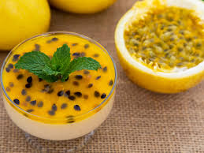
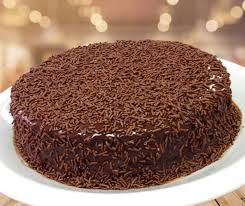
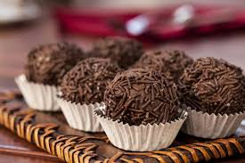
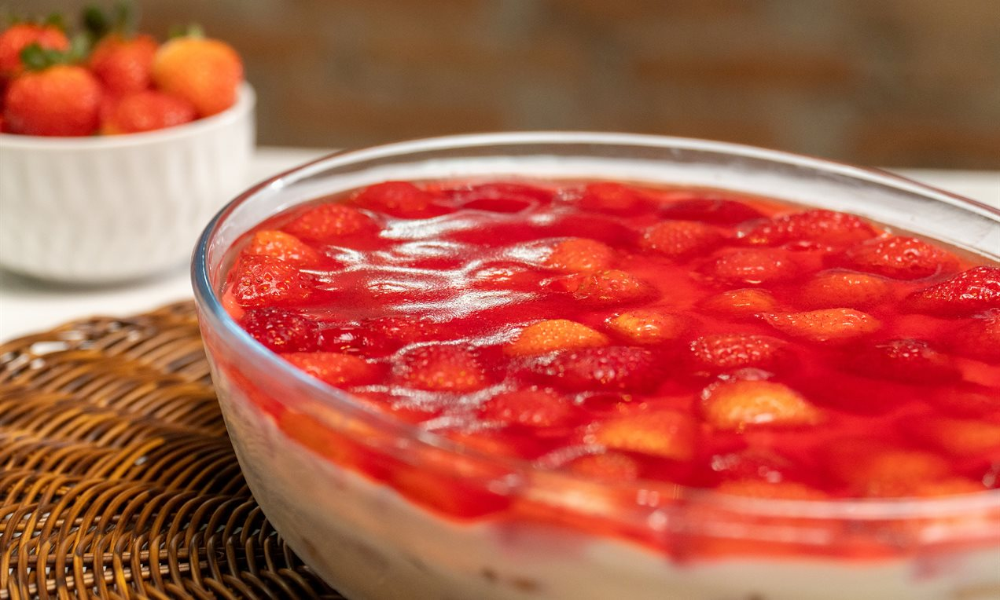
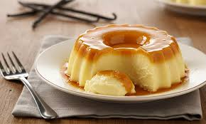

essa seção aqui a IA fez inteira eu só fiz foi : revisar e caçar ums arquivo de imagem e colocar aqui. não me responsabilizo pelo reverterio só o site de mousse funciona aparentemente , o resto é mockup
Receitas Favoritas

🍮 Mousse de Maracujá
Uma deliciosa sobremesa leve e refrescante com o sabor tropical do maracujá. Perfeita para qualquer ocasião especial!
Ver Receita Completa
🍰 Bolo de Chocolate
Um clássico irresistível! Um bolo macio, úmido e cheio de chocolate que agrada a todos os paladares.

🍫 Brigadeiro
O doce mais típico das festas brasileiras! Uma receita simples mas que sempre faz sucesso com as crianças e adultos.

🍓 Pavê de Morango
Uma sobremesa sofisticada e deliciosa, perfeita para refeições especiais! Combinação perfeita de biscoito, creme e morango fresco.
🍪 Cookies de Chocolate
Biscoitos mornos, crocantes e macios que derretem na boca! Ideais para o café da tarde ou como presente especial.

🍮 Pudim de Leite Condensado
Uma delícia cremosa e suave! O pudim é uma sobremesa clássica brasileira que sempre faz sucesso na mesa.